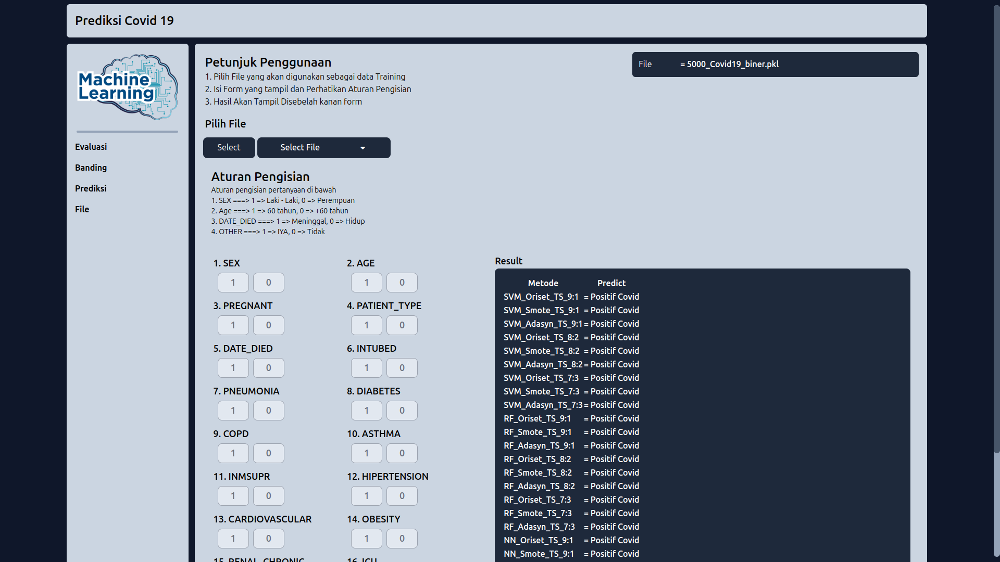
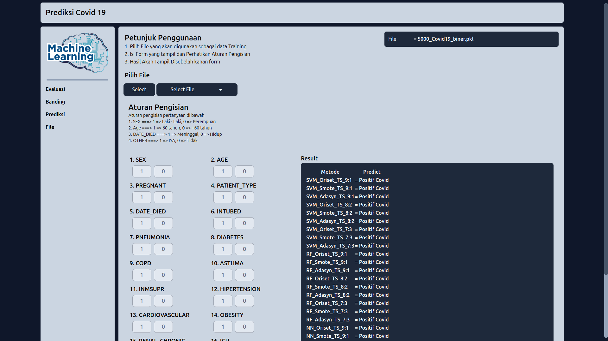

Biodata dan kontak
Name : Faishalbahy Ahmad Fathuni
Email : faisal2017bahi@gmail.com
Wa : 0813-8507-8633
LinkIn : @Faishalbahy Ahmad Fathuni
Github : @Faishal21ahmad
CV : Download
Alamat : Wanasari, Cibitung, Bekasi, Jawa Barat, 17520
Domisil : Wuryantoro, Wonogiri, Jawa Tengah
Tentang Saya
Saya lulusan baru S1 Sistem Informasi dengan keahlian dalam pengembangan web dan pembelajaran mesin. Saya memiliki pengalaman dalam menggunakan teknologi seperti Laravel, Tailwind, Flask, dan Python, yang telah saya terapkan dalam berbagai proyek akademis. Dengan ketertarikan yang kuat untuk mempelajari teknologi baru. saya memiliki komitmen untuk meingkatkan dan mengembangkan keterampilan teknis saya serta beradaptasi dengan perkembangan industri yang terus berkembang. Saya siap berkontribusi dalam pengembangan solusi berbasis teknologi melalui pendekatan yang inovatif dan efisien.
Pendidikan
Universitas Amikom Yogyakarta - Yogyakarta, Indonesia
S1 - Sistem Informasi, 3.75/4.00
Sep 2020 - Aug 2024
Sertifikat
- (2021) Cisco : IT Essentials
- (2022) Cisco : NGD LINUX Essentials
- (2023) Dicoding : Belajar Dasar Pemrograman Web
- (2023) Dicoding : Belajar Membuat Front-End Web untuk Pemula
- (2024) Dicoding : Belajar Dasar Pemrograman JavaScript
Project List
Resampling Data Classification Covid-19 - Machine Learning
Merupakan Project penelitian tugas akhir Skripsi, Membahas Tentang Perbandingan kinerja resampling terhadap model klasifikasi pada ketidakseimbangan dataset covid-19 dan ditampilkan dalam bentuk web
- Pemerapan Framework Flask dan TailwindCSS
- Evaluasi Resampling Model Training
- Banding kinerja resampling
- Uji Model Prediksi Pengguna
VDn.id - Full Stack Laravel 11
VDN proyek latihan Laravel 11. VDN.in (Video Note) merupakan platform untuk mencatat ide dan materi dari video YouTube. Pengguna dapat menambahkan catatan pada momen tertentu, membuat playlist, dan mengaksesnya dengan mudah. Platform ini cocok untuk mahasiswa, profesional, dan kreator konten.
- Desain Perancangan Web, UI/UX, Database, logic konsep
- Implementasi seluruh perancangan
- Penerapan Framework Laravel, TailwindCSS
Sugeng Rawuh - Web Project
Merupakan Final Project web untuk Mata Kuliah UI/UX, yang membahas sistem pemesanan rumah makan menggunakan Scan QR dan Display Service:
- Pemerapan Framework Laravel dan TailwindCSS
- Implementasi coding dan alur pemesanan makanan melalui Scan QR
- Implementasi coding front-end pemesanan makanan melalui Display Service
- Implementasi dashboard admin rumah makan
- Implementasi Fitur di dashboard admin mencakup pengaturan daftar menu, pesanan proses, meja, kategori, pilihan metode pembayaran, display service
Tokokitaaja - Web Project
Merupakan final project web Mata Kuliah E-Commers, membahas pengembangan sistem E-Commers dan menambahkan fitur baru
- Pemerapan Framework CodeIgniter
- Penambahan Fitur Favorit
- Pada Fitur Favorit memungkinkan pengguna untuk memilih produk sebagai produk favorit, kemudian produk ditampilkan di dashboard pengguna pada menu 'Produk Favorit'.
Keterampilan
- HTML
- CSS
- Javascript
- PHP
- Python
- Laravel
- TailwindCSS
- Flask
- CodeIgniter
- Web Dev
- Linux
- Mikrotik
- Network
- Git
- IT Support
Hobi
- Mengulik Mini Computer (STB Arm)
- Technology Enthusiast
- Mengulik Elektronik
- Fotografi
Project Showcase

 

ML Resampling Data
Pengujian banding metode resampling dalam mengatasi data yang tidak seimbang
View Details